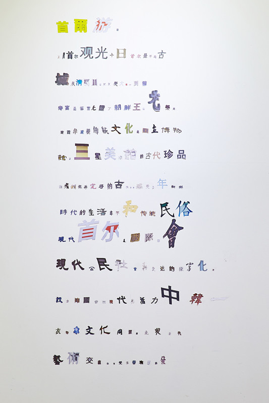
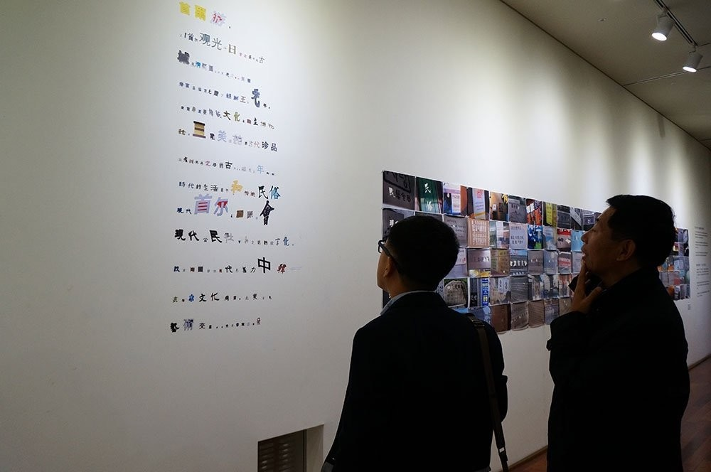
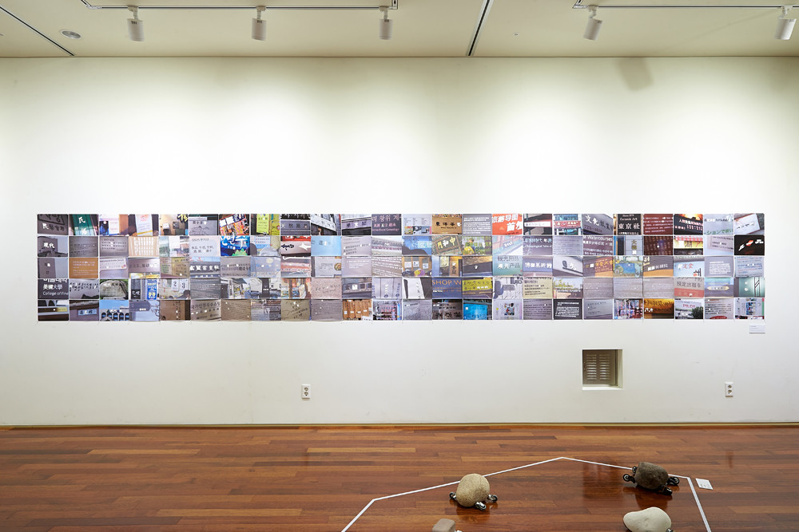
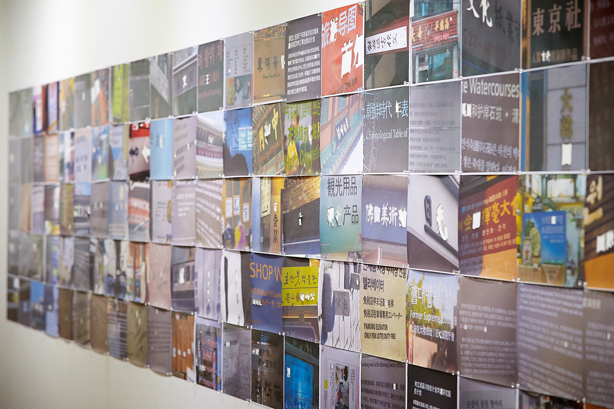

News & Contact
Projects
Cooperation projects
Texts
Biography
sHI Wanwan
Artist
News & Contact
Projects
Cooperation projects
Texts
Biography
首尔游记

相纸打印 ，直接粘贴在墙面 ，可变尺寸 ，2013
2013年代表中国艺术家参加由中国政府和首尔政府举办的一个文化交流活动。在首尔考察的七天时间内，用在首尔街头巷尾拍摄的中国字，最后组成了一篇游记散文《首尔游记》。
1980年代韩国民主化运动废除了汉字，汉字消失在韩国社会文化中。

首尔市政府展厅，首尔

首尔市政府展厅，首尔

首尔市政府展厅，首尔